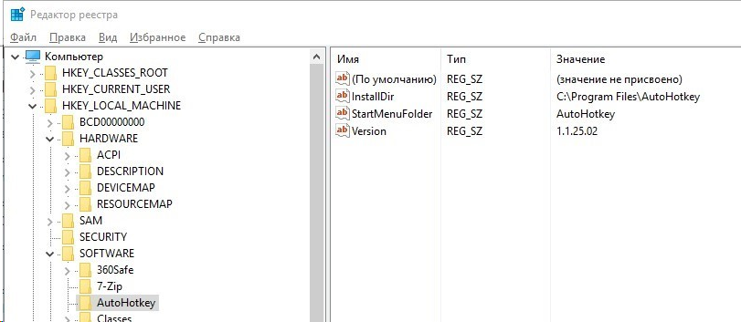
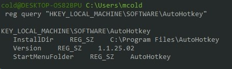

reg query "HKEY_LOCAL_MACHINE\SOFTWARE\AutoHotkey"
reg query "HKLM\SOFTWARE\AutoHotkey"

> reg query "HKLM\SOFTWARE\AutoHotkey" /v Version
HKEY_LOCAL_MACHINE\SOFTWARE\AutoHotkey
Version REG_SZ 1.1.25.02
> reg query "HKLM\SOFTWARE\AutoHotkey" /s
HKEY_LOCAL_MACHINE\SOFTWARE\AutoHotkey
InstallDir REG_SZ C:\Program Files\AutoHotkey
Version REG_SZ 1.1.25.02
StartMenuFolder REG_SZ AutoHotkey